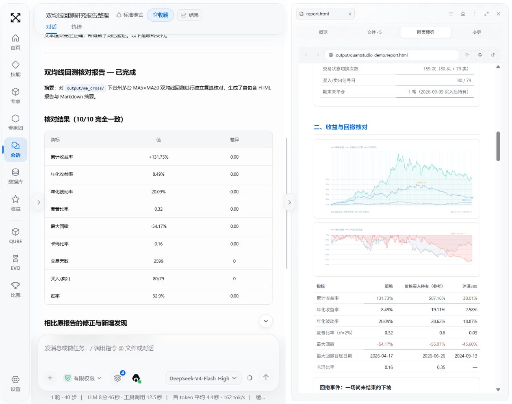
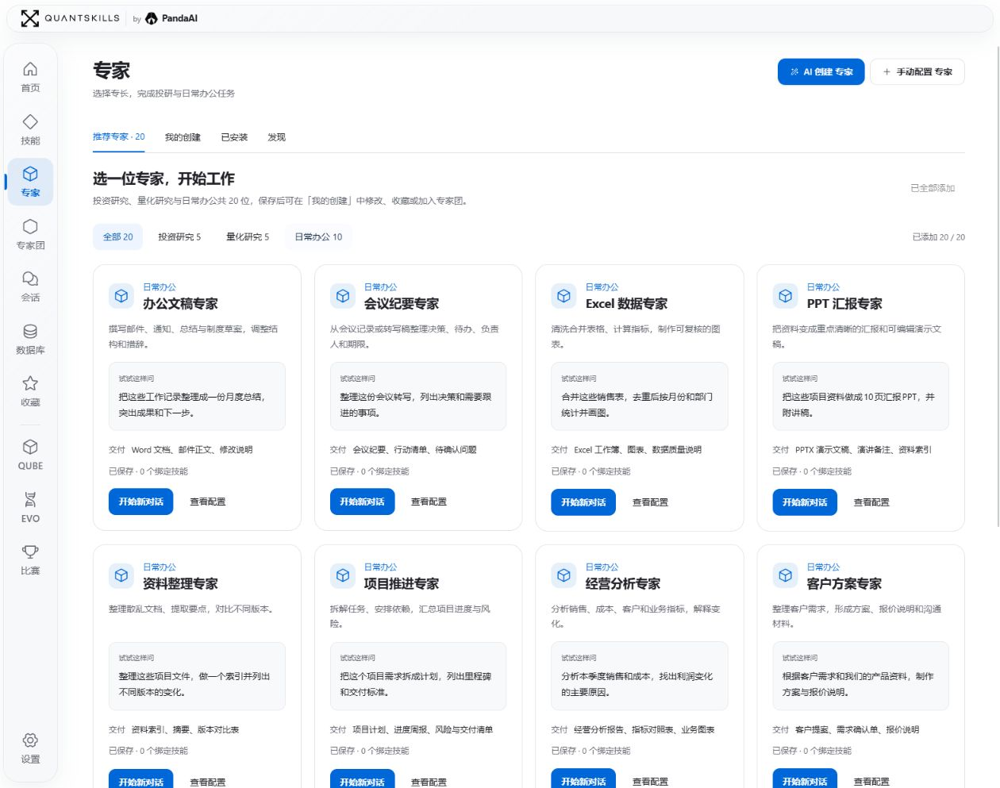
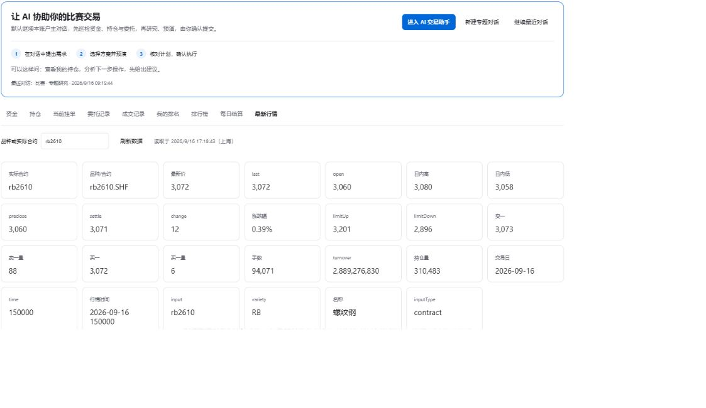
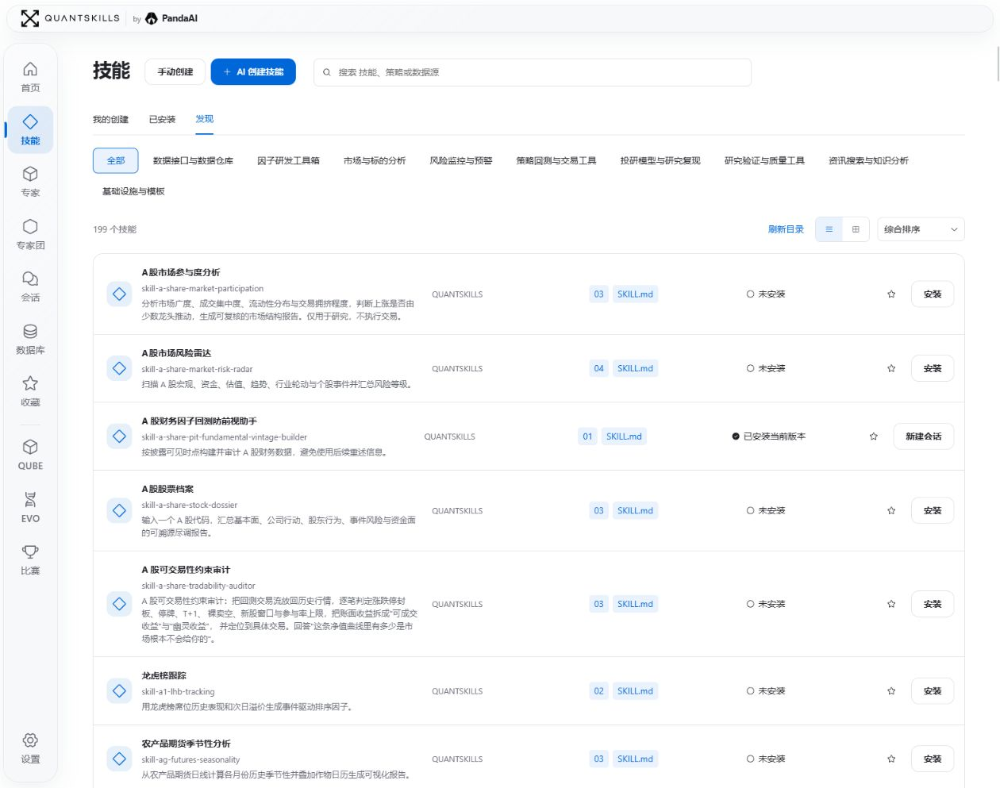
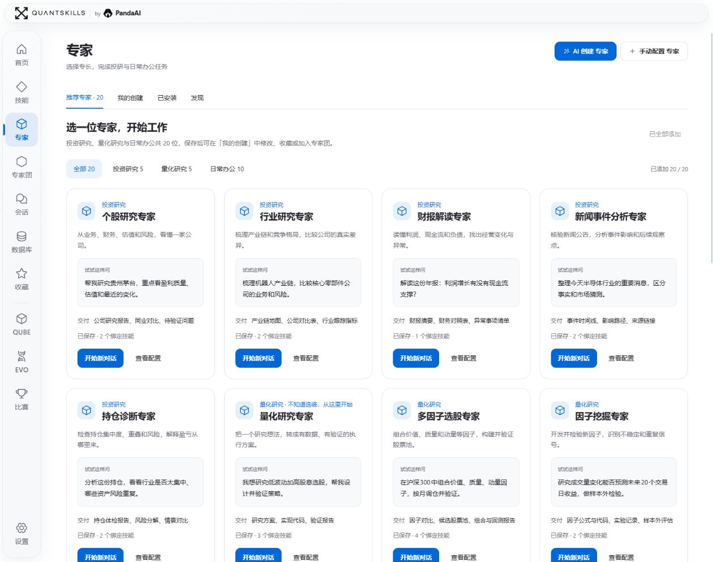
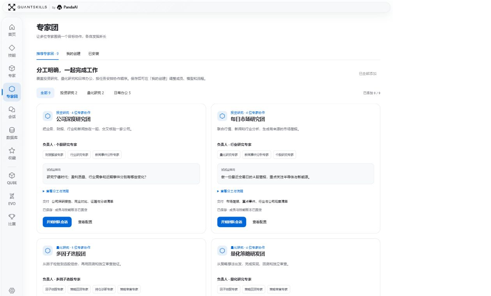
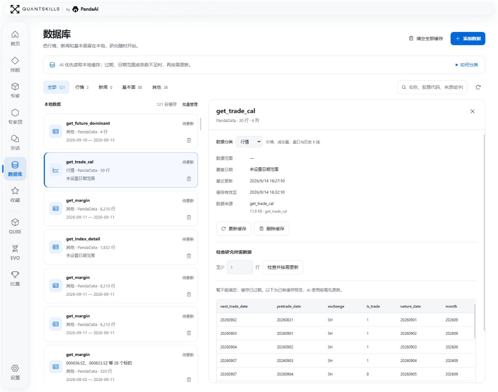

QuantStudio：AI 时代，你的个人开源量化工作台
Quant · Work · Trade
源于 PandaAI 旗下的 QuantSkills 开源社区。
复盘市场、验证因子、整理表格、制作汇报、参加量化赛事——这些工作，可以从同一张工作台上的一句话开始。
QuantStudio 把技能、专家、专家团、数据与产物连接起来，让 AI 沿着你的目标完成具体工作。
Quant｜让研究走到报告、图表与代码
“复盘今天的市场，追踪热点与资金，再把观察转成可验证的因子。”
从行情与资料分析，到因子挖掘、策略编写、回测核对，研究可以在对话中持续推进。右侧打开 HTML 报告，曲线、表格和代码就在讨论旁边；发现疑问，接着追问、核对和修改。

白色工作台实拍：左侧核对指标，右侧检查净值、回撤与对照表。历史研究案例不代表未来收益。
Work｜把手里的资料，做成能交付的文件
“把这些销售表合并去重，统计部门表现，再做一份月度汇报。”
办公文稿、会议纪要、Excel 数据、PPT 汇报、经营分析、客户方案，都有对应专家。材料进入工作区，输出文档、工作簿、演示文稿与行动清单；文件可以继续打开、复核和下载。

具体文件格式由配置的模型、技能与文档运行环境决定。
Trade｜先研究和预演，再确认执行
通过 PandaAI CLI 与赛事接口，接入期货模拟赛和第四届因子大赛。
期货模拟赛中，可以查看资金、持仓、委托、成交与行情，让 AI 巡检账户、研究合约、形成计划。下单或撤单前，由你核对并确认，再跟踪执行回执。

因子大赛中，先确定研究目标、批次与预算，再回测、筛选候选、管理因子池；入池、修改和正式提交都有确认环节。
赛事需连接自己的账户并配置相关环境。自动巡检不自动下单；算力阈值用于停止追加任务，不是费用封顶。宣传片中的交易与因子实验采用演示动画。
技能、专家、专家团，怎么选？
技能：复用一种方法
技能保存步骤、方法与工具约定。可以发现和安装现成技能，也可以说：“把刚才的复盘流程做成一个技能。”确认保存后，下次直接调用。

专家：交给一个专业角色
专家有明确职责，并组合相应技能。个股研究、财报解读、策略回测、数据整理，各自拥有专门的对话。你也可以说：“创建一位市场研究专家，使用我的复盘技能。”

专家团：把复杂任务分给多人
负责人协调目标与交付，成员分别负责研究、数据、实现或审查。可以使用已有团队，也可以说：“组一个投研专家团，分别负责热点、资金和策略审查。”先确认成员与分工，再开展协作。

过程、数据和结果，都有位置
会话保存普通、技能、专家和专家团的工作过程；对话与轨迹方便回看执行步骤，结果侧栏集中打开报告、图表、代码和文件。
数据库管理行情、新闻与基本面缓存，查看来源、日期范围和表格内容；研究先检查已有数据，再按需补充。

首页发现能力、继续最近工作；收藏留下常用入口；设置管理模型、工作区、权限、数据连接、外观和更新。QUBE / EVO 提供 PandaAI 对应独立研究服务的介绍与入口。
从你自己的工作台开始
QuantStudio 支持 Windows、macOS、Linux 本地运行，也可部署为团队共享工作区。配置模型、选择能力，带上你的资料，开始第一项任务。
GitHub：https://github.com/quantskills/QuantStudio
国内镜像：https://gitee.com/quantskills/QuantStudio
完整安装步骤见仓库 README。开源代码采用 GPL-3.0-or-later / PandaAI 商业双授权。
QuantStudio · by PandaAI
AI 时代，你的个人开源量化工作台。